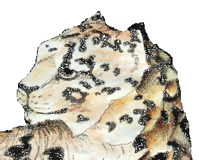

|

The Fencing Salle `Sorry, I keep wanting to use
my teeth.`
Suddenly the tunnel opens out and you find yourself standing at the base of a huge gorge. Some terrible upheaval in the past has literally torn the cliff in two. On your left, it gets wider and wider 'til the sheared rock fuses with the outer wall of the crater. To your right, it rapidly narrows, both sides of the gorge closing together and disappearing into the darkness. Above, you can make out the top of the gorge as a ragged, black shadow against the newly emerging stars. Dusk has fallen but after so long in the dim tunnels, your eyes are more than able to cope with the reduced level of light. Before you, the gorge floor is oddly smooth, the reason becoming obvious as you step forward onto fine, dry sand. To your right, you can see that the upper end of the gorge is flooded - a dark lake banked with sand. You look around but can see no sign of your host. Instead you suddenly notice a large Snow Leopard lying on the sand next to the water. It looks up, notices you and makes an 'over here' gesture with its paw. Rather hesitantly you walk over and then carefully hunker down on the sand at a safe distance. The leopard nods at you in the friendly manner and you get a strong feeling that something odd is going on. For some time you both sit there enjoying the cool air and the gentle splashing of the lake. The water is pitch black in this light and you can't get any idea of its depth. Eventually your host speaks - his voice is softer than before but still familiar. I should imagine you are wondering why I call this place the salle? Well, I decided that there should be at least one room in the lair where I could relax certain illusions. I didn't want that place to be too obvious - I'm working hard at building up the feel of the Lair and I don't want to damage that with too much *reality*. That's why you see me as you do, rather than a 'real' me. The leopard nods to itself then chuckles softly. He turns to look at you, the rolls over, lolling comfortably on the still warm sand. That and because I'd be almost as happy to be a cat as a dragon. Indeed, Karne started out as a cat - but then you might have been able to guess that. He tends to change from time to time - as do I. Anyways, suppose I should introduce myself. The name is Michael Wright and I'm a 20 something chemistry student at Imperial College London. That's in my spare time of course! As you have seen I've an interest in fantasy and SF fiction, computers generally and fantasy art. Oh yes, and fencing - though I haven't done any of that for a while. I'm not going to say much about the real me since it's rather uninteresting and anyway that's not really the point of this site. So what is the point? Why have I built the Lair? Part of it is for the experience, I build web sites as a hobby (and even for money!) and part of it is a desire to 'mark out a territory'. Mainly though, this place gives me somewhere to play, somewhere to be other than what I am. Karne is a fairly important person in my life (yes I know that sounds silly) - many people have asked me 'do you *really* believe you are a dragon?' Well the answer is no, though if I was offered the chance to be one.. [chuckle] Karne allows me a certain amount of freedom, he also lets me entertain myself and others through my art or fiction and through my web presence. Hope that makes sense - if not, well.. forget it - it's not that important after all! And why am I a cat atm? Well... I can't be Karne and I have certain aversion to being myself on the net - for those who don't understand what I mean by that lets just say I finding it more entertaining to be something else [grin] As for photos.. well, there might be a few of me dotted around - see if you can find one. I'm not going to make then obvious am I? The cat chuckles softly and then nods a farewell. Then, as you watch, he slowly fades out - leaving only the grin that last quite some time after the rest of him has gone. You sit by the water for a while, thinking to yourself then push yourself to your feet and head back to the study. No doubt you'll find Karne there - you're looking forward to talking to him. |

 © Michael.Wright 1999 karne@innocent.com
© Michael.Wright 1999 karne@innocent.com
(8=:[ plaintive plea - please don't steal my art work! ]:=8)